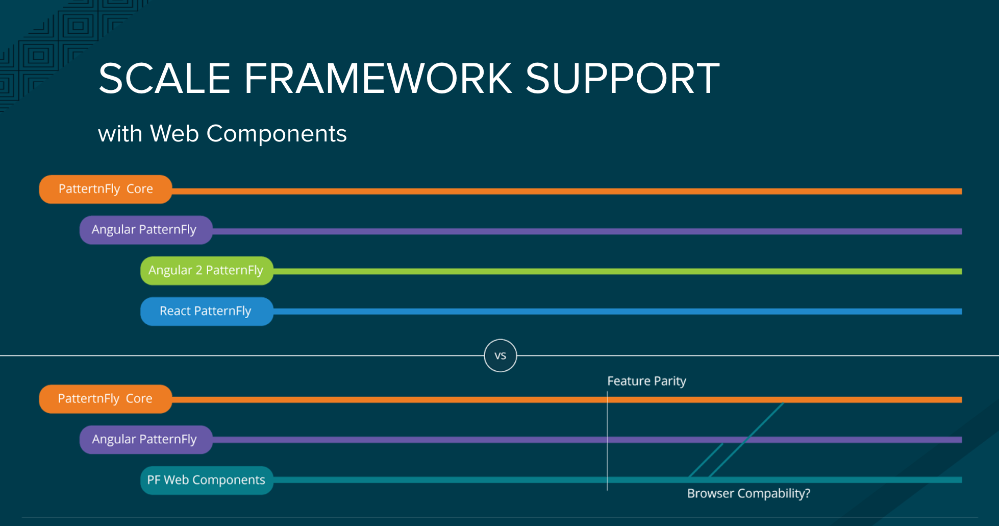

The Wide World of Web Components
What are web components and why do we care?
Web components comprise a new set of web standards that allow for better code portability in web applications. Web components intend to replace the need for frameworks in some areas and allow for more base level abstractions, further enabling cross-framework components.
How do web components play into the Patternfly picture?
Patternfly is an open source community of designers and developers. Web components help achieve its common goals of providing consistent patterns and modular implementations that can be shared across solutions.


The future of the web...
- Web standards and browsers are evolving
- Reusing components from different frameworks is challenging
- The jQuery story is ending...
- Web components make excellent leaf nodes
Web components are...
- Composable: combine them together creating new experiences
- Encapsulated: isolate markup, styles, and behavior
- Reusable: easy to extend
Web Components, a timeline...
Web Component specifications
Custom Elements
Browser APIs to define new HTML elements
HTML Templates
The <template> tag now allows documents to contain inert chunks of DOM
Shadow DOM
Encapsulated component DOM and styling
HTML Imports
Declarative methods of importing HTML documents into other documents
Custom Elements
Define new elements with the customElements global.
/* my-element.js */
class MyElement extends HTMLElement {
// This gets called when the HTML parser sees your tag
constructor() {
super(); // always call super() first in the ctor.
this.msg = 'Hello, World!';
}
// Called when your element is inserted in the DOM or
// immediately after the constructor if it’s already in the DOM
connectedCallback() {
this.innerHTML = `${this.msg}
`;
}
}
// This registers your new tag and associates it with your class
window.customElements.define('my-element', MyElement);
Custom Elements
v0 Lifecycle
| Callback | Called when |
|---|---|
| createdCallback | an instance of the element is created |
| attachedCallback | an instance was inserted into the document |
| detachedCallback | an instance was removed from the document |
| attributeChangedCallback(attrName, oldVal, newVal) | an attribute was added, removed, or updated |
v1 Lifecycle
| Callback | Called when |
|---|---|
| constructor | an instance of the element is created or upgraded. |
| connectedCallback | called every time the element is inserted into the DOM. |
| disconnectedCallback | called every time the element is removed from the DOM. |
| attributeChangedCallback(attrName, oldVal, newVal) | an attribute was added, removed, or updated. note: only attributes listed in the observedAttributes property will receive this callback. |
| adoptedCallback | the custom element has been moved into a new document (e.g. someone called document.adoptNode(el)). |
Custom Elements
You can also extend native HTML elements. The primary benefit is to gain all of their features (things like DOM properties, methods, and accessibility features).
class FancyButton extends HTMLButtonElement {
constructor() {
super();
this.addEventListener('click', e => this.drawRipple(e.offsetX, e.offsetY));
}
// Material design ripple animation.
drawRipple(x, y) {
let div = document.createElement('div');
div.classList.add('ripple');
this.appendChild(div);
div.style.top = `${y - div.clientHeight/2}px`;
div.style.left = `${x - div.clientWidth/2}px`;
div.style.backgroundColor = 'currentColor';
div.classList.add('run');
div.addEventListener('transitionend', e => div.remove());
}
}
customElements.define('fancy-button', FancyButton, {extends: 'button'});
Custom Elements
Consumers can utilize the element by declaring it in their HTML: jsfiddle
<button is="fancy-button" disabled>Fancy button!</button>
or by creating an instance in Javascript:
let button = document.createElement('button', {is: 'fancy-button'});
button.textContent = 'Fancy button!';
button.disabled = true;
document.body.appendChild(button);
or using the new operator:
let button = new FancyButton();
button.textContent = 'Fancy button!';
button.disabled = true;
document.body.appendChild(button);
HTML Templates
The <template> element allows you to declare fragments of DOM which are parsed, inert at page load, and can be activated later at runtime. jsfiddle
<template id="element-template">
<style>
p { color: orange; }
</style>
<p>I'm in Shadow DOM. My markup was stamped from a <template>.</p>
</template >
Shadow DOM
A new way to encapsulate styles for your custom element, giving you functional boundaries between DOM subtrees. jsfiddle
(function(){
let elementTemplate = doc.querySelector('.element-template');
class MyElement extends HTMLElement {
attachedCallback() {
/* Create a new Shadow Root for your element */
this.createShadowRoot();
/* append your element's template */
this.shadowRoot.appendChild(document.importNode(elementTemplate.content, true));
}
}
})();
HTML Imports
Provide a new means to include HTML documents inside other documents. Now you can load your component's HTML, JS, and CSS in a single file. jsfiddle
Why do we need them?
- <iframe>s are difficult to style, frustrating to script with, and don't give us the same context.
- AJAX loading everything in large bundles & minified scripts just feels wrong. It doesn't give us composable pieces and makes dependency trees way too complicated.
- Approaching HTTP/2 standards and server push are a perfect fit for HTML Imports.
<head>
<link rel="import" href="/path/to/imports/my-element.html">
</head>
Framework Interoperability
Web components can easily be consumed in your framework using an HTML import, script tag, or ES6 module import.
Angular2
Consuming pf-tabs in Angular2: jsfiddle
React
Consuming pf-tabs in React: jsfiddle
Browser Support

Polyfills to the rescue!

- Apple Safari Technology Preview now supports Custom Elements v1 and Shadow DOM v1.
Some web component frameworks...
ReactReactive Elements
|
AureliaAurelia
|
PolymerPolymer Elements
|
Onsen UIOnsen Elements
|
X-TagsX-Tags Elements
|
BosonicBosonic Elements
|
And...Patternfly!
Web component development is now underway. You can find our latest work and stay up to date with the discussion at the links below.

Github project: https://github.com/patternfly-webcomponents
Slack channel: https://patternfly.slack.com/messages/webcomponents
The Path to Patternfly 4.0
Web components are coming to Patternfly 4 and will better encapsulate much of the core logic in PF3.

Questions?
Come visit us!
We'd be happy for you to join our Patternfly open source community.
- Website: http://www.patternfly.org
- Slack channel: https://patternfly.slack.com/
- Patternfly Mailing List: https://www.redhat.com/mailman/listinfo/patternfly
- Contribution Guide: https://www.patternfly.org/get-started/contribute/#_
Further Resources
- WebComponents.org : an open community discussing web component best practices.
- CustomElements.io : an open repository for sharing web components.
- Javascript Patterns: : deep dive of JS web component patterns from my talk at Triangle JS Meetup